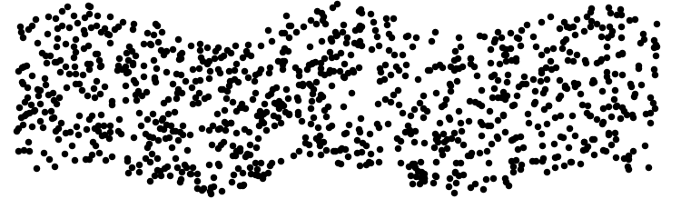
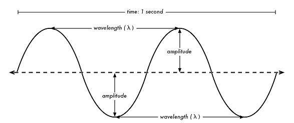
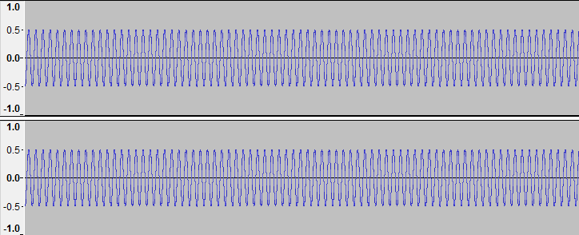

The Basics
A sound, by its most basic definition, is merely a variation in pressure caused by vibration. The vibrating object, whether it’s a violin string, a speaker cone, or your vocal chords, will create a longitudinal wave that travels outwards from its source.

Longitudinal waves (fig 1.1) cause expansion (rarefaction) and compression of particles parallel to the direction the wave travels. These expansions and compressions are what create the variation in pressure of whatever medium the wave travels through. A transverse wave on the other hand (like a wave in the ocean; fig 1.2) causes particles to move perpendicularly to its path.
In order for sound to exist, a medium must be present—sadly, this notion would make most sci-fi movies that take place in space quite dull. Now, while gas molecules (what compose air) are the most effective at rapidly changing pressure due to their chemical properties, sound can also propagate through liquids and solids. However, because liquid and solid molecules are more chemically ‘stable’, their individual atoms cannot move as freely as atoms that compose gasses.
More Properties
Graphs are very useful for examining the behavior and physical properties of sound waves. Let’s take a look at the most common graphical representation of sound: the sine wave.
As shown in figure 1.3, a sound wave’s amplitude (A) describes its variation in pressure, reaching its highest (peak) when the particles of its medium are most compressed; likewise, its lowest (trough) when the particles are most rarefied (expanded). Expressing rarefaction and compression as amplitude allows a longitudinal wave like sound to be represented as a transverse wave over time. This is useful because, through this periodic motion, we can more easily visualize important numerical properties.
A sound wave’s period (T) is the time it takes to complete one cycle of its periodic motion, measured in seconds. Accordingly, wavelength (λ) is the distance the wave travels during one period, measured in meters. Its frequency (f) is the inverse of the period — the number of cycles per second — measured in Hertz (Hz). Finally, the speed (v) of a wave , in meters per second, is calculated by multiplying wavelength by frequency.
Constructive and Destructive Interference
At any given moment, there will be a multitude of sounds originating from many different sources all around you. However, since they all travel through the same medium, these sound waves all interact with each other. There are two kinds of interference — constructive and destructive. Let's take a closer look:
Figure 1.4 is a sine wave with the frequency of 261 Hz, equivalent to middle C on a piano. As shown on the y-axis, its amplitude is +/- 1.0.
Now here are two more sine waves, each with the same frequency but amplitudes of only +/- 0.5. We can now observe how sound waves interact; it's surprisingly simple. When two or more waves travel in the same direction, the resulting sound is the sum of their amplitudes. In the example below (fig 1.5), the original sine wave will play, followed by the combined waves of A = 0.5.
Notice how it sounds exactly alike? This effect is an example of constructive interference. Since both waves are in sync and have the same frequency, their amplitudes add up to 1.0, sounding identical to the original tone.
Now let's shift one of the waves of A = 0.5 half a wavelength; doing so will put both waves perfectly out of sync. Let's take a listen:
Hear anything? Listen again. This is an example of destructive interference. Because they are almost exactly half a wavelength apart, their amplitudes add up to — you guessed it — almost zero.
Loudness and the Decibel Scale
The loudness of any given sound is subject to many factors, including the environment it resonates in and how near or far your ear drums are from the source (among other things). However, it's easy to measure the intensity of sound using tools to determine its objective loudness. These meters determine the amount of energy the source of the sound puts out, commonly referred to as its sound pressure level (SPL).
Sound pressure level is measured in units called decibels (dB). The equation for calculating the intensity of sound is as follows:
| I(dB) = 10log10 | I |
| I0 |
I = intensity of given sound, measured in watts / m2
I0 = threshold of human hearing (10-12watts / m2)
Now, this equation might look intimidating but when it's broken down, it's quite accessible. Let's examine how the common logarithm functions:
Think about the sound of a whisper — its intensity is about 100 times larger than the threshold of hearing (I0). Therefore, its ratio is 102.
The common logarithmic function equates the power of ten of a number, which gives us the number 2. Lastly, according to the equation, we multiply this number by 10, giving our result: a whisper is 20dB.
As shown in the example above, the decibel measurement system is not linear in scale, meaning a 40dB sound is NOT twice as loud as a 20 dB whisper. The 40dB sound is actually 100 times larger! This is because of the behavior of the log within the equation—an increase in 10dB means the intensity of a sound has increased 10 fold, or by one power of ten (10x + 1).
Below is a chart of common sounds and their intensities in the dB scale:
Sound |
dB Level |
| Threshold of human hearing | 0dB |
| Whisper | 20dB |
| Light rustling leaves | 30dB |
| Ambience in a library | 40dB |
| Refrigerator | 50dB |
| Regular conversation | 60dB |
| Shower | 70dB |
| Vacuum cleaner | 80dB |
| Blender | 90dB |
| Riding a motorcycle | 100dB |
| Rock concert | 110dB |
| Clap of thunder (close range) | 120dB |
| Take-off of jet (close range) | 150dB |